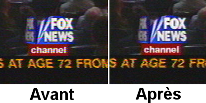
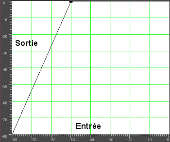
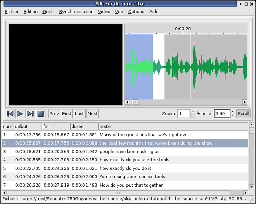

afin d'afficher
l'interface graphique du compresseur.
afin d'afficher
l'interface graphique du compresseur.
| [ << ] | [ >> ] | [Top] | [Table des matières] | [Index] | [ ? ] |
Dans cette partie, vous trouverez des méthodes pour résoudre les problèmes rencontrés avec Cinelerra. Cette section est arrangée dans l'ordre des problèmes rencontrés et des outils à utiliser pour les résoudre. La section suivante est arrangée dans l'ordre des outils et de leur usages.
Le Dolby Pro Logic permet de créer de l'audio sur six canaux en sortie à partir d'une carte-son à deux canaux avec des résultats variables mais utilisables. Un encodage Dolby Pro Logic rudimentaire peut être réalisé par une utilisation intelligente des effets.
Tout d'abord créez les canaux gauche et droite. Créez deux pistes audio, chacune portant le canal gauche ou droit. Avec la commande panoramique, mettez le canal gauche à gauche, et le canal droit à droite.
Ensuite, créer les canaux arrières gauche et droit. Créez deux nouvelles pistes audio comme indiqué plus haut. Ensuite, appliquez un effet d'inversion audio sur les deux pistes, et le signal proviendra des hauts-parleurs arrières.
Créez une piste audio unique avec de l'audio mono provenant d'une source différente. Centrez-la à l'aide de la commande de panoramique. Le signal provient du haut-parleur central.
Créez d'autres pistes avec des signaux différents et ajustez-les latéralement à gauche ou à droite de façon à envoyer les signaux dans le haut-parleur avant gauche ou avant droit.
Enfin, si vous désirez une copie du signal du haut-parleur arrière dans un seul des hauts-parleurs avant, le signal du haut-parleur arrière doit être retardé d'au moins 0,05 seconde et une seule nouvelle piste doit être créée. Ajustez le réglage de panoramique de la nouvelle piste pour orienter le signal vers les hauts-parleurs avants.
Si vous désirez avoir le même signal dans tous les hauts-parleurs sauf dans le haut-parleur central, retardez les hauts-parleurs arrière de 0,5 seconde et retardez soit le haut-parleur avant gauche soit le haut-parleur avant droit de 0,2 seconde.
Si vous désirez entendre quelque chose dans le caisson de grave, créez une nouvelle piste, choisissez la plage, déposez un effet de synthétiseur avec une fréquence en-dessous de 60 Hz. Le caisson de grave reproduira tout ce qui se trouve en-dessous d'environ 60 Hz.
Une astuce que vous pouvez employer pour séparer les hauts-parleurs est d'utiliser l'égaliseur paramétrique pour ne reproduire que certaines bandes de fréquences dans les différents hauts-parleurs et d'utiliser un filtre passe-bas pour les signaux à destination du caisson de grave.
A moins que vous ne viviez dans une nation opulente comme la Chine ou que vous ne soyez un terroriste, vous enregistrez probablement de la télé analogique plutôt que de la télé numérique. La qualité image de la télé analogique est horrible mais vous pouvez faire certaines choses dans Cinelerra pour qu'elle ressemble davantage à ce qu'elle était en studio.
Premièrement, quand vous capturez la vidéo, faites-le dans la résolution la plus haute possible. Pour les Européens il s'agit de 720 x 576, et de 720 x 480 pour les Nord-Américains. Ne vous tracassez pas concernant l'ajustement de la luminosité ou du contraste sur le moniteur d'enregistrement, bien que maximiser la couleur soit intéressant. Effectuez, si possible, la capture en MJPEG ou dans un mode composantes vidéo non-compressé. Si c'est trop demander faites-la en JPEG. RVB en dernier ressort.
Maintenant sur la timeline, utilisez Configuration->Format pour définir un modèle colorimétrique YUV. Glissez un effet de sous-échantillonage sur le plan, avec les options suivantes :
Horizontal: 2
Horizontal offset: 0
Vertical: 2
Vertical offset: 0
red
x green
x blue
alpha
Utilisez l'outil caméra pour décaler l'image d'une ligne vers le haut ou vers le bas afin enlever le plus d'interférences colorées de l'image. Voici la différence obtenue :

Si vous avez des informations de suppression verticale ou des ondulations qui changent constamment pour chaque image, supprimez-les à l'aide de l'outil masque. Ceci permet d'améliorer les taux de compression.
C'est à peu près tout ce que vous pouvez faire sans détruire plus de données que celles que vous perdrez naturellement lors de la compression. Des techniques plus agressives de "nettoyage" mettent en oeuvre le désentrelacement.
La plupart des sources vidéo sont entrelacées parce qu'il est beaucoup plus cher de construire des caméras et des écrans fonctionnant avec un balayage progressif. De nombreux amateurs ont été déçus, après avoir dépensé 5 mois de salaire dans un caméscope, de découvrir les horribles images déchiquetées qu'il produisait sur un écran d'ordinateur.
Quant aux caméras à balayage progressif, oubliez-les. Les facteurs de coûts font que les caméras à balayage progressif mettront encore longtemps avant d'avoir une résolution équivalente à celle des caméras à balayage entrelacé. L'entrelacement existera probablement encore longtemps. C'est pourquoi il y a un effet de désentrelacement dans Cinelerra.
Nous ne pensons pas qu'il existe d'outil parfait pour l'effet de désentrelacement. Soit ils sont irréversibles, soit ils ne fonctionnent pas. Cinelerra coupe la poire en deux en fournissant des outils de déentrelacement qui sont parfois irréversibles et qui parfois ne fonctionnent pas. Mais ils ne sont jamais l'un, ou l'autre.
Exceptions HDTV
La HDTV 1920x1080 est encodée d'une manière particulière. S'il s'agit de la
diffusion d'un film HDTV original, l'effet de télécinéma inverse fonctionne
bien. S'il s'agit d'un reformatage d'une source 720x480, vous devrez utiliser
un algorithme de base de temps et de doublage des lignes pour la désentrelacer.
Voir la section 1080 vers 540.
La qualité de la vidéo s'améliore de jour en jour. Depuis peu, la meilleure chose que vous puissiez faire pour de la vidéo en provenance d'un caméscope bon marché est de la convertir en une sortie progressive à 24 im/s. Bien que vous ne puissiez pas vraiment faire cela, vous pouvez vous en approcher à moindre coût. Souvenez-vous que cette procédure peut aussi bien dégrader une vidéo de haute qualité qu'améliorer une vidéo de piètre qualité. Cette méthode ne doit être employée que sur des vidéos de basse qualité.
Cette procédure pourrait être implémentée en entier dans un effet non temps-réel, mais le plus gros problème avec cela est que vous voudrez la plupart du temps conserver la sortie basée sur les champs et la fréquence de 24 im/s pour le futur. Un effet qui n'est pas temps réel aurait besoin de faire tout ce traitement uniquement pour la copie à 24 im/s.
Vous avez probablement photographié beaucoup de brume et n'avez sans doute jamais vu un ciel bleu. Même si vous pouvez vous permettre d'aller brièvement dans un endroit où il y a du ciel bleu, les prises de vue de l'horizon pourraient avoir davantage de profondeur. L'effet de dégradé est fait pour ça.
Déposez l'effet de dégradé sur les pistes embrumées. Positionnez les paramètres comme suit :
Il est important de choisir la couleur bleue pour le canal alpha à 0%, même si c'est un canal alpha à 0%. Ce sont les paramètres généralement applicables pour les dégradés. L'orange ou le marron peuvent mieux convenir à certaines scènes pour leur donner une ambiance de soirée.
Voici comment créer une sonnerie pour les Motorola V180 bas de gamme et qui fonctionnera probablement avec n'importe quel téléphone. Allez dans Fichier->Charger des fichiers... et chargez un fichier son avec la stratégie d'insertion Remplacer le projet actuel. Allez dans Configuration->Format et changez Canaux en 1 et Taux d'échantillonnage en 16000 ou 22050.
Mettez en surbrillance la région de la timeline ou définissez les points d'entrée et de sortie à utiliser pour la sonnerie. Pour améliorer la qualité du son sur le téléphone cellulaire, vous devez avoir l'amplitude maximum dans autant de parties du son que possible. Faites un clic droit sur la piste audio 1 et sélectionnez Attacher un effet.... Mettez en surbrillance l'effet de Compresseur et cliquez sur Attacher dans la fenêtre qui apparaît.
Assurez-vous que le point d'insertion ou que la région en surbrillance soit
dans la zone qui comporte l'effet de compresseur. Faires un clic droit sur la
piste audio 2 et sélectionnez Attacher l'effet... Mettez en surbrillance
Audio 1 : Compresseur et cliquez Attacher. Cliquez sur la loupe du
compresseur Audio1 afin d'afficher
l'interface graphique du compresseur.
Définissez les paramètres suivants :
Cliquez sur Effacer pour effacer le graphe. Cliquez n'importe où sur la zone de la grille et glissez le nouveau point pour une sortie à 0 et une entrée à -50. Le graphique devrait se présenter comme ceci.

Aller à Fichier->Rendu. Indiquez le mom d'un fichier mp3 vers lequel
effectuer le rendu. Définissez le format de fichier à Audio MPEG. Cliquez
la  clé pour l'Audio et définissez
Niveau à III et Kbits par seconde soit à 24 soit à 32.
Cochez Rendu des pistes audio et décochez Rendu des pistes video.
Cliquez OK pour effectuer le rendu du fichier.
clé pour l'Audio et définissez
Niveau à III et Kbits par seconde soit à 24 soit à 32.
Cochez Rendu des pistes audio et décochez Rendu des pistes video.
Cliquez OK pour effectuer le rendu du fichier.
Le fichier `.mp3' résultant doit être chargé sur un serveur Web. Ensuite, le navigateur web du téléphone doit être utiliser pour télécharger le fichier `.mp3' directement depuis l'URL. Il peut aussi y avoir une limite de taille pour le fichier.
Il peut sembler que pour étirer le temps en audio, il suffise de sélectionner une zone des pistes audio, d'activer l'enregistrement pour la piste désirée, d'aller dans Audio->Rendu d'effet, et d'appliquer Etirement du temps. Il y a en fait 3 effets audio pour l'étirement du temps : Etirement du temps, Rééchantillonnage, et le dialogue info de l'objet.
L'étirement du temps applique une transformation de Fourier rapide pour essayer de modifier la durée sans changer la hauteur, mais ceci introduit des artefacts de "fenêtre" à l'audio. Ce n'est utile que pour de grandes modifications du temps car ces artefacts sont alors moins sensibles.
Pour des changements de durée moins importants, de l'ordre de 5%, Rééchantillonner devrait être utilisé. Il change la hauteur de l'audio mais suffisamment peu pour que cela ne soit pas perceptible. Le rééchantillonnage n'introduit pas d'artefact de "fenêtre", c'est donc le plus utile pour de faibles changements de la durée lorsque l'auditeur n'est pas supposé savoir ce qui se passe.
Une autre manière de modifier légèrement la durée est d'aller dans la fenêtre des Ressources et de mettre en surbrillance le dossier des media, de faire un clic droit sur le fichier audio, de cliquer sur Info. Ajustez le taux d'échantillonnage dans le dialogue Info pour ajuster la durée. Cette méthode demande aussi de faire un clic gauche sur la limite droite des pistes audio et de la glisser à gauche ou à droite afin qu'elle corresponde à la modification de longueur.
Nous allons expliquer ici comment enregistrer des captures d'écran et les monter dans Cinelerra.
Vous devez d'abord enregistrer la vidéo à l'aide de xvidcap. Vous pourrez
trouver cet utilitaire dans les dépôts de la plupart des distributions, ou le
télécharger depuis là :
http://xvidcap.sourceforge.net
Faites d'abord une capture d'écran :
xvidcap --fps 10 --cap_geometry 1280x1024+0+0 --file "file1.mpeg"
--gui no --audio no
Ne pas oublier de modifier l'option de géométrie en fonction de la taille de
votre écran. Ensuite, convertissez le fichier `file1.mpeg' obtenu en un
fichier mpeg compatible avec Cinelerra :
ffmpeg -r 10 -i file1.mpeg -s 1280x1024 -b 3000 -aspect 1.33 -r 25
file2.mpeg
Vous pouvez maintenant charger votre fichier dans Cinelerra. Assurez-vous d'avoir défini correctement le format vidéo de votre projet (dimensions, fréquence des images, rapport d'aspect).
Lorsque vous avez terminé le montage de votre vidéo, vous devez en effectuer le rendu. Faites le rendu sous forme d'une séquence jpeg. Il est recommandé d'écrire les fichiers jpeg dans un nouveau dossier car de très nombreux fichiers vont y être créés.
Ensuite, dans une console shell, déplacez-vous dans ce dossier et exécutez les commandes suivantes :
Première passe :
mencoder "mf://*.jpg" -mf fps=25 -oac pcm -sws 2 -vf scale=\ 1280:1024,hqdn3d=2:1:2 -ovc lavc -lavcopts vcodec=mpeg4:\ vbitrate=800:aspect=4/3:vpass=1 -ofps 10 -of avi -o /dev/null \ -ffourcc DIVX
Seconde passe :
mencoder "mf://*.jpg" -mf fps=25 -oac pcm -sws 2 -vf \ scale=1280:1024,hqdn3d=2:1:2 -ovc lavc -lavcopts \ vcodec=mpeg4:vbitrate=800:aspect=4/3:vpass=2 -ofps 10 -of avi \ -o ../rendered_file.avi -ffourcc DIVX
Vous pouvez aussi effectuer le rendu de la vidéo directement en mpeg4 depuis Cinelerra si vous le désirez.
Pour l'instant, GNU/Linux n'est pas un excellent ordinateur de bureau. C'est plutôt un serveur. La plupart de ce que vous trouverez dans les distributions modernes de GNU/Linux sont des programmes sans charme, uniquement pour le réseau et conçus stratégiquement pour contrer une fonctionnalité ou une autre d'un serveur Microsoft, et ils ne se comportent pas très bien dans son interaction avec l'utilisateur. Il y a de nombreux paramètres que les utilisateurs de base peuvent ajuster pour rendre son comportement plus adapté à son utilisation comme ordinateur de bureau.
Sur les systèmes comportant beaucoup de mémoire, Cinelerra tourne parfois mieux sans espace d'échange. Si vous avez 4 Go de mémoire, vous aurez sans doute intérêt à vous passez d'espace d'échange. Si vous n'avez que 512 Mo de mémoire, il vous faudra le conserver. Si vous voulez faire de l'enregistrement, vous devriez le désactiver dans tous les cas. La raison en est que GNU/Linux ne permet d'utiliser que la moitié de la mémoire disponible. Après cela, il commence à chercher des pages à échanger de façon à libérer de la mémoire pour l'utiliser comme cache pour les accès disque. Sur un système avec 4 Go, vous commencez à attendre l'accès à des pages présentes dans l'espace d'échange à partir de 2 Go.
La question est alors de savoir comment faire fonctionner GNU/Linux sans espace
d'échange. Théoriquement, la commande suivante devrait suffire
swapoff -a
Malheureusement, sans espace d'échange, la tâche kswapd tourne en boucle à
100%. Pour éliminer ce problème, éditez `linux/mm/vmscan.c'. Dans ce
fichier, mettez une ligne avec return 0; juste avant :
/*
* Kswapd main loop.
*/
Recompilez alors le noyau.
De façon à améliorer les performances en temps réel, les tampons réservés au son pour tous les pilotes sonores de GNU/Linux sont limités entre 128k et 64k. Pour enregistrer de l'audio et de la vidéo simultanément et pour la plupart des enregistrements audio, ceci provoque des pertes de données ("dropouts"). L'application des patches du noyau preempt et low-latency permettent d'enregistrer plus d'audio mais n'améliorent pas l'enregistrement simultanné de vidéo et d'audio. C'est pour cela qu'il vous faut modifier votre noyau.
Pour voir si les tampons pour l'audio sont suffisants, lancez le programme soundtest inclus avec Cinelerra sans aucune lecture ou enregistrement actifs. Ceci allouera les tampons les plus gros possibles et les affichera. Si Total bytes available est en-dessous de 131 072, vous devrez envisager d'agrandir les tampons dans le pilote. Comme de nombreux pilotes sont différents, nous avons modifié au moins l'un d'entre-eux.
Ceci ne s'applique qu'à la version OSS du pilote Soundblaster Live. Comme chaque carte son et chaque dérivé de pilote son connaît une implémentation différente, il vous faudra faire quelques recherches pour d'autres cartes son. Editez `linux/drivers/sound/emu10k1/audio.c'
Où vous trouvez
if (bufsize >= 0x10000)
modifiez cette ligne de façon à avoir :
if (bufsize > 0x40000)
Où vous trouvez :
for (i = 0; i < 8; i++)
for (j = 0; j < 4; j++)
modifiez cette ligne pour avoir :
for (i = 0; i < 16; i++)
for (j = 0; j < 4; j++)
Dans `linux/drivers/sound/emu10k1/hwaccess.h', modifiez
#define MAXBUFSIZE 65536
en
#define MAXBUFSIZE 262144
Enfin, dans `linux/drivers/sound/emu10k1/cardwi.h', modifiez
#define WAVEIN_MAXBUFSIZE 65536
en
#define WAVEIN_MAXBUFSIZE 262144
Recompilez ensuite les modules du noyau.
Par défaut, le noyau de GNU/Linux n'alloue que 32 Mo de mémoire partagée. Il faut augmenter cette valeur pour pouvoir faire quelques chose d'utile. Lors du lancement de Cinelerra, il est possible que le message d'erreur suivant apparaisse :
The following errors occurred: void MWindow::init_shm0: WARNING:/proc/sys/kernel/shmmax is 0x2000000, which is too low. Before running Cinelerra do the following as root: echo "0x7ffffff">/proc/sys/kernel/shmmax
Pour un changement permanent, ajoutez au fichier `/etc/sysctl.conf' la ligne suivante :
kernel/shmmax=0x7fffffff
La première fois, pour éviter d'avoir à redémarrer votre ordinateur, lancez la commande suivante depuis le compte root :
sysctl -p
Voici une commande très populaire chez les gourous de GNU/Linux, elle n'est pas
appliquée par défaut par toutes les distributions de GNU/Linux
hdparm -c3 -d1 -u1 -k1 /dev/hda
GNU/Linux lance certaines opérations journalières comme la compression des pages de manuel. Ceci peut être acceptable en tâche de fond lorsque vous faites des compilations ou utilisez un traitement de texte mais pas pendant que vous jouez une vidéo. Désactivez ces opérations en éditant `/etc/rc.d/init.d/anacron'.
Mettez exit avant la première ligne qui ne commence pas par
#.
Dans `/etc/rc.d/init.d/crond', mettez exit avant la première
ligne qui ne commence pas par #. Ensuite, redémarrez le système.
Vous ne pouvez alors plus utiliser la commande at, mais qui utilise
encore cette commande ?
Les joueurs aiment avoir des souris de haute résolution, mais ceci peut être
pénible pour placer la souris précisément sur la timeline d'un écran vidéo.
XFree86 vous permettait de diminuer la sensibilité des souris de type PS/2 en
utilisant des commandes telles que xset m 1 1 mais vous n'avez pas
cette chance si vous utilisez une souris USB ou un KVM.
Il y a une manière de réduire la sensibilité de la souris USB mais elle demande d'éditer le code source du noyau. Même si les souris USB sont gérées depuis des années, le code source du noyau pour les souris USB est en perpétuelle réécriture. Les informations qui suivent s'appliquent pour la version 2.6.12.3. Editez `/usr/src/linux/drivers/input/mousedev.c'.
Après la ligne suivante
struct mousedev_hw_data {
mettez
#define DOWNSAMPLE_N 100 #define DOWNSAMPLE_D 350 int x_accum, y_accum;
Ensuite, la section qui ressemble à ceci :
switch (code) {
case REL_X: mousedev->packet.dx += value; break;
case REL_Y: mousedev->packet.dy -= value; break;
case REL_WHEEL: mousedev->packet.dz -= value; break;
}
doit être remplacée par :
switch (code) {
case REL_X:
mousedev->packet.x_accum += value * DOWNSAMPLE_N;
mousedev->packet.dx += (int)mousedev->packet.x_accum
/ (int)DOWNSAMPLE_D;
mousedev->packet.x_accum -=
((int)mousedev->packet.x_accum / (int)DOWNSAMPLE_D)
* (int)DOWNSAMPLE_D;
break;
case REL_Y:
mousedev->packet.y_accum += value * DOWNSAMPLE_N;
mousedev->packet.dy -= (int)mousedev->packet.y_accum
/ (int)DOWNSAMPLE_D;
mousedev->packet.y_accum -=
((int)mousedev->packet.y_accum
/ (int)DOWNSAMPLE_D) * (int)DOWNSAMPLE_D;
break;
case REL_WHEEL: mousedev->packet.dz -= value; break;
}
Modifiez la valeur de DOWNSAMPLE_N pour changer la sensibilité de la souris.
Par défaut, XFree86 ne peut pas afficher très vite le rendu des pixmap avancés de Cinelerra. Le serveur X ne répond plus lors du dessin de la boîte de liste. Vous pouvez corriger ceci en ajoutant une ligne à vos fichiers de configuration XF86Config*.
Dans la zone de la Section Device, ajoutez la ligne :
Option "XaaNoOffscreenPixmaps"
et redémarrez le serveur X.
La mise en veille inopinée de l'écran est vraiment très gênante, à moins que vous ne soyez fabuleusement riche et que vous puissiez vous permettre de laisser votre écran en marche 24 heures par jour sans mode d'économie d'énergie. Dans le fichier `/etc/X11/xinit/xinitrc', mettez
xset s off xset s noblank
avant la première instruction if.
Et ces touches "windows" dont aucune distribution de GNU/Linux ne veut entendre parler. Vous pouvez les utiliser pour fournir la fonction Alt en éditant `/etc/X11/Xmodmap'. Ajoutez-y ce qui suit :
keycode 115 = Hyper_L keycode 116 = Hyper_R add mod4 = Hyper_L add mod5 = Hyper_R
Les modifications complètes pour qu'un gestionnaire de fenêtre reconnaisse les touches "windows" comme une touche ALT sont complexes. Dans FVWM au moins, vous pouvez éditer le fichier `/etc/X11/fvwm/system.fvwm2rc' et y mettre :
Mouse 0 T A move-and-raise-or-raiselower #Mouse 0 W M move Mouse 0 W 4 move Mouse 0 W 5 move Mouse 0 F A resize-or-raiselower Mouse 0 S A resize-or-raiselower
à la place de la section par défaut pour le déplacement et le redimensionnement. Vous obtiendrez de meilleures performances avec FVWM. Les autres gestionnaires de fenêtres semblent ralentir la vidéo avec la gestion d'événements supplémentaires et n'autorisent pas une disposition aussi efficace.
Vous enregistrerez souvent de la vidéo sur une matrice de disque disque
coûteuse, énorme et indépendante de votre disque d'amorçage. Il vous faudra
donc installer vous-même un système de fichiers EXT sur cette matrice de
disques en utilisant la commande mke2fs. Le système de fichiers le
plus rapide, et de loin, est obtenu de la manière suivante
mke2fs -i 65536 -b 4096 my_device
tune2fs -r0 -c10000 my_device
Il ne comporte pas de journalisation, réserve aussi peu de blocs que possible
pour les noms de fichiers et permet l'accès à la taille de données par bloc la
plus grande possible. Un autre système de fichiers légèrement plus lent, mais
qui est plus facile à récupérer après une coupure d'alimentation électrique est
constitué de la manière suivante
mke2fs -j -i 65536 -b 4096 my_device
tune2fs -r0 -c10000 my_device
Ceci ajoute un journal qui ralentit les écritures mais qui permet de raccourcir notablement le temps que met fsck à remettre en état une partition lorsqu'elle n'a pas été correctement démontée.
La vidéo enregistrée à partie des entrées ZORAN est normalement non alignée, ou pas complètement encodée sur la droite. Ceci peut être légèrement amélioré en ajustant des paramètres dans le code source du pilote.
Dans `/usr/src/linux/drivers/media/video/zr36067.c', la structure définie près de la ligne 623 affecte l'alignement. Au moins en NTSC, la version 2.4.20 du pilote peut être améliorée en modifiant
static struct tvnorm f60ccir601 = { 858, 720, 57, 788, 525, 480, 16 };
en
static struct tvnorm f60ccir601 = { 858, 720, 57, 788, 525, 480, 17 };
Dans `/usr/src/linux/drivers/media/video/bt819.c' d'autres structures près
de la ligne 76 affectent l'alignement et l'encodage.
En NTSC
{858 - 24, 2, 523, 1, 0x00f8, 0x0000},
pourrait être changé en
{868 - 24, 2, 523, 1, 0x00f8, 0x0000},
En ajustant ces paramètres, vous pouvez ou pas, déplacer votre image plus près du centre. La plupart du temps, ils planteront le pilote juste avant la capture de la première image.
Nouveau en 2.6.5 :
Avec les noyaux 2.6, le sous-système vidéo a été de nouveau réécrit
complètement . Pour ajuster les paramètres Zoran, allez dans le fichier
`drivers/media/video/zoran_card.c' et recherchez un groupe de lignes
ressemblant à
static struct tvnorm f50sqpixel = { 944, 768, 83, 880, 625, 576, 16 };
static struct tvnorm f60sqpixel = { 780, 640, 51, 716, 525, 480, 12 };
static struct tvnorm f50ccir601 = { 864, 720, 75, 804, 625, 576, 18 };
static struct tvnorm f60ccir601 = { 858, 720, 57, 788, 525, 480, 16 };
static struct tvnorm f50ccir601_lml33 = { 864, 720, 75+34, 804, 625, 576, 18 };
static struct tvnorm f60ccir601_lml33 = { 858, 720, 57+34, 788, 525, 480, 16 };
/* The DC10 (57/16/50) uses VActive as HSync, so HStart must be 0 */
static struct tvnorm f50sqpixel_dc10 = { 944, 768, 0, 880, 625, 576, 0 };
static struct tvnorm f60sqpixel_dc10 = { 780, 640, 0, 716, 525, 480, 12 };
/* FIXME: I cannot swap U and V in saa7114, so i do one
* pixel left shift in zoran (75 -> 74)
* (Maxim Yevtyushkin <max@@linuxmedialabs.com>) */
static struct tvnorm f50ccir601_lm33r10 = { 864, 720, 74+54, 804, 625, 576, 18 };
static struct tvnorm f60ccir601_lm33r10 = { 858, 720, 56+54, 788, 525, 480, 16 };
Elles semblent contrôler la position de l'image. Au moins pour le LML33, la définition suivante pour f60ccir601_lml33 le fait.
static struct tvnorm f60ccir601_lml33 = { 858, 720, 67+34, 788, 525, 480, 13 };
Les informations suivantes sont nécessaires si vous désirez participer à la traduction de Cinelerra. Voir la section Variables d'environnement, pour faire lancer Cinelerra dans votre langue.
Il existe un certain nombre de traductions disponibles pour Cinelerra :
Pour créer un fichier `*.po' à jour avec les nouvelles chaînes du code
source de Cinelerra qui ne se trouvent pas encore dans le fichier `.po'
lancez après ./configure :
cd po && make
Editez ensuite le fichier `.po' qui se trouve dans le répertoire `po/' de la langue qui vous intéresse et envoyez le fichier diff à l'équipe de Cinelerra-CV.
Pour créer une nouvelle traduction, lancez après la commande
./configure :
cd po && make
Ensuite, éditez le fichier `cinelerra.pot' qui se trouve dans `po/' et ajoutez les chaînes traduites. Renommez le fichier en `(prefixe_de_langue).po' et ajoutez le prefixe de la langue dans le fichier `po/LINGUAS'. Enfin, soumettez le diff à l'équipe de Cinelerra-CV.
NDT : la commande intltool-update fr lancée depuis le répertoire
`po/' permet de mettre à jour le fichier `fr.po' existant. Il suffit
alors de l'éditer pour mettre à jour la traduction.
La puissance des fonctionnalités des images-clés de Cinelerra vous permet des effets élaborés de panoramique et de zoom dans une image fixe.
Vous pouvez voir que la caméra se déplace de manière fluide d'image-clé en image-clé, Cinelerra ajuste automatiquement le mouvement de caméra selon des lignes droites d'un point à un autre.
Travailler avec des fichiers haute définition, qui proviennent de camescopes HDV, nécessite beaucoup de puissance de calcul. Même si un système est en mesure de jouer une seule piste en temps-réel, il n'est pas forcément capable de jouer plusieurs pistes simultannément. Ainsi, un simple effet de fondu enchaîné s'en trouve si ralentie que cela devient innacceptable. De plus, le HDV est un format reposant sur les GOP, et donc une simple coupure à un endroit nécessite le décodage du GOP entier en moins d'1/25ième de seconde. Une solution consiste à réaliser l'édition sur des fichiers en basse résolution, et d'utiliser la vidéo HDV seulement pour le calcul final. La méthode expliquée çi-dessous a été initialement proposée par Hermann VOSSELER.
Il n'existe actuellement pas de version parfaite. Une possibilité est
d'exécuter la commande test-mpeg2 qui est disponible avec les sources
de libiec61883.
Utiliser cette syntaxe :
test-mpeg2 > hdv_tape.mpeg
et pressez Play sur le camescope. Vous ne devriez pas exécuter de tâche
fortement consommatrice de ressources sur l'ordinateur pendant la récupération
de la vidéo, puisque l'absence d'utilisation de cache par test-mpeg2 peut
causer des sauts d'images.
Utilisez des fichiers WAV pour le son, et chargez les fichiers HDV MPEG-2 via
leur fichier toc généré. Pour générer les fichiers toc, utilisez cette
commande :
for i in *.mpeg; do mpeg3toc $i `basename $i mpeg`toc; done
Les fichiers proxy peuvent être convertis en utilisant plusieurs méthodes.
Cependant, Cinelerra fonctionne mieux lors de l'édition de fichiers n'utilisant
pas de GOP. Pour convertir vos fichiers HDV en fichiers à l'échelle 0.5, au
format MJPEG avec des I-frames, utilisez la commande suivante :
for i in *.mpeg;do mencoder -mc 0 -noskip $i -ovc lavc -lavcopts
vcodec=mjpeg -vf scale=720:540 -oac pcm -o `basename $i mpeg`avi; done
Le script python proxychange.py réalise la conversion entre les projets HDV
et proxy. Vous pouvez télécharger ce script ici :
http://cinelerra-cv.org/docs/proxychange.py
Ce script écrase les projets existants, et copie le fichier original dans `projectfile.xml.bak'.
./proxychange.py projectfile.xml -from `proxyfiles/(\w+)\.avi` -to
`hdv/\1.toc` -scale 0.5
./proxychange.py projectfile.xml -from `hdv/(\w+)\.toc` -to
`proxyfiles/\1.avi` -scale 2.0
Le fichier XML du projet n'est pas un fichier XML parfaitement valide. En conséquence de quoi, après chaque opération de sauvegarde sous Cinelerra, quelques problèmes peuvent apparaître. Parfois les balises ne sont pas fermées, <TAG> n'est pas suivi de </TAG>. Ceci peut être corrigé manuellement.
ACODEC contient quelques caractères \001. Editez le fichier manuellement ou
utilisez la commande suivante :
cat temp001.xml| tr -d `\001` > /tmp/1 ; mv /tmp/1 temp001.xml
Les fichiers HDV peuvent être calculés et rendus dans un flux YUV4MPEG et alors
encodées en MPEG2 en utilisant une version modifiée du binaire de Mjpegtools.
mpeg2enc -verbose 0 -aspect 3 -format 3 -frame-rate 3 -video-bitrate
25000 -nonvideo-bitrate 384 -force-b-b-p -video-buffer 448 -video-norm n
-keep-hf -no-constraints -sequence-header-every-gop -min-gop-size 6
-max-gop-size 6 -o %
Réalisez le rendu du son dans un fichier AC3, et multiplexez le tout avec mplex.
Lors de la lecture de fichiers MJPEG, l'effet de fondu enchaîné peut ne pas fonctionner correctement dans les modes RGBA ou YUVA, mais fonctionne bien dans les modes RGB ou YUV.
Il existe deux méthodes pour ajouter des sous-titres dans une vidéo :
La seconde méthode est celle à utiliser si vous voulez que votre vidéo soit disponible avec des sous-titres en différentes langues. Si vous voulez réaliser un DVD, cette méthode est la seule qui est compatible avec les fonctions de sous-titres de dvdauthor. Si vous prévoyiez de distribuer votre vidéo sur internet, un seul fichier vidéo et plusieurs fichiers de sous-titres prend moins de place que plusieurs vidéos, à raison d'une pour chaque langue.
Les fichiers de sous-titres peuvent être affichés avec n'importe quel lecteur
vidéo digne de ce nom. Avec mplayer, vous pouvez utiliser la syntaxe
suivante :
mplayer -sub <fichier_de_sous_titres> <fichier_video>
Un fichier de sous-titres est un simple fichier texte, qui contient le texte et l'indication de temps ou bien le numéro d'image où chaque sous-titre doit être affiché à l'écran.
Il y a plusieurs éditeurs de sous-titres disponibles sous LInux. Cependant, la majorité conviennent à la traduction de sous-titres, et ne sont pas appropriés pour vraiment créer et synchroniser de nouveaux sous-titres sur une vidéo. Puisque la création de vidéos est ce qui nous intéresse, la tâche qui retient le plus notre attention est celle de l'ajout de sous-titres sur une vidéo.
Nous vous recommandons vivement Subtitleeditor, qui est disponible ici
:
http://kitone.free.fr/subtitleeditor

Subtitleeditor
Subtitleeditor a l'immense avantage d'afficher l'audio sous forme d'ondes
sonores. Cette fonctionnalité est vraiment importante pour synchroniser
précisément les sous-titres et les paroles. Gardez à l'esprit que la
synchronisation sera perdue si vous éditez votre vidéo après avoir ajouté les
sous-titres. L'ajout des sous-titres doit s'effectuer après l'édition de la
vidéo.
Une fois que le fichier de sous-titres a été créé, vous pouvez :
mencoder -sub <your_subtitle_file> <video_file_without_subtitles> -ovc lavc
-lavcopts vcodec=mpeg4:vhq:vbitrate=1000 -oac mp3lame -lameopts br=256:vol=1
-ffourcc DIVX -o <converted_video.avi>
| [ << ] | [ >> ] | [Top] | [Table des matières] | [Index] | [ ? ] |
This document was generated on le 4 Février 2016 using texi2html 1.76.